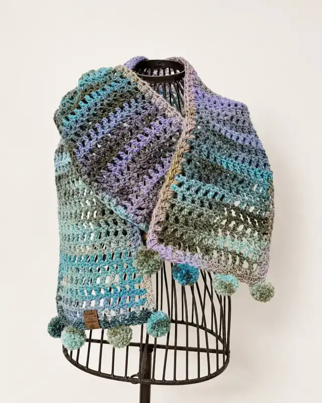

THE JOY OF MAKINGOn the needles
KNITTING & HANDMADEA place for textures, colours and the pleasure of watching something take shape. Explore the shawls, sweaters, hats and little creations in my handmade collection.
Discover the stories behind the stitches